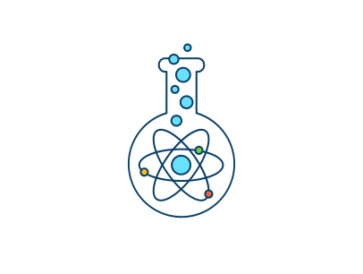
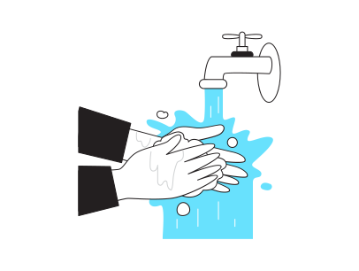
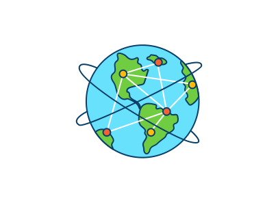

El Mundo al alcance de tus manos
Edicion especial de HECTOR DIAZ GALLEGOS 10/06/2021
Edicion especial de HECTOR DIAZ GALLEGOS 10/06/2021
¿Qué importancia tienen las ciencias experimentales en tu desempeño académico?

Los cambios y avances que se han dado en la sociedad a través del tiempo se deben a las ciencias y los
resultados que se han conseguido con las mismas. Los seres humanos nos caracterizamos por permanecer en
movimiento con el fin de hallar la manera de mejorar nuestra calidad de vida en todo sentido. Desde el
hallazgo de vacunas y tratamientos para fuertes enfermedades, conocimiento del funcionamiento de los
procesos que se llevan a cabo en nuestro ecosistema, hasta la manera en la que han sido desarrollados
los sistemas digitales que han de hacer de nuestra vida un poco más sencilla en diferentes sentidos.
En nuestro desempeño académico las Ciencias Experimentales nos ayudan a adquirir habilidades como la
corroboración de ideas para las cuales necesitamos desarrollar procedimientos, poner a prueba nuestras
hipótesis y manejar variables.
Juegos Didácticos
“Qué es nuestra imaginación comparada con la de un niño que intenta hacer un ferrocarril con espárragos”
-
Jules Renard.
Los juegos didácticos son malos para el aprendizaje de tu hijo.
Importancia del medio ambiente y los cambios que surgirán en el 2050
“La tierra provee lo suficiente para satisfacer las necesidades de cada hombre, pero
no la avaricia de
cada hombre”. - M. Gandhi
Esta frase la escuche en un video sobre el cuidado del medio ambiente, es por eso que quiero que
reflexiones sobre la importancia de cuidar el medio ambiente así mismo te hablare sobre los cambios que
surgirán en el 2050.
 Ver Articulo Completo
Ver Articulo Completo
Problemas ambientales, ¿Cómo se resolverán en el 2050?
Pasa el tiempo, la tecnología va avanzando y día con día sigues la misma rutina, pero hay algo que la mayoría de las personas no se han dado cuenta y es que se está acabando el agua, tal vez estés pensando que es una broma, ojalá fuera una broma.
 Ver Articulo CompletoInfografía de Industrias con propuestas para el medio ambiente
La responsabilidad social constituye una actitud de trabajos sensible y consciente frente a los problemas en esta sociedad, la cual nos lleva a adoptar hábitos, estrategias y procesos que ayudan a minimizar el impacto que podemos generar al medio ambiente y a nuestra sociedad.
Ver Articulo CompletoComo cambiara la vida del ser humano en la nueva normalidad
Apuesto que la mayoría de personas que conocemos e incluso nosotros mismos nunca nos imaginamos que iba a ocurrir una pandemia, que íbamos a estar en confinamiento mas de un año y que nuestra rutina diaria iba a cambiar drásticamente. Es por eso que quiero comentarte como cambiara la vida del ser humano en la nueva normalidad.
 Ver Articulo Completo
Ver Articulo Completo
Huella Ecológica
Seguramente hayas escuchado hablar sobre la huella ecológica, pero ¿Qué es la huella ecológica?, la huella ecológica es un indicador para conocer el grado de impacto de la sociedad sobre el ambiente, es una herramienta para determinar cuánto espacio terrestre y marino se necesita para producir todos los recursos y bienes que se consumen, así como la superficie para absorber los desechos que se generan, usando la tecnología actual.
 Ver Articulo CompletoHector Diaz Gallegos
Estudiante
No soy Google, pero tengo lo que has estado buscando, contactame para crear tu pagina web DINAMICA, MODERNA y ELGANTE